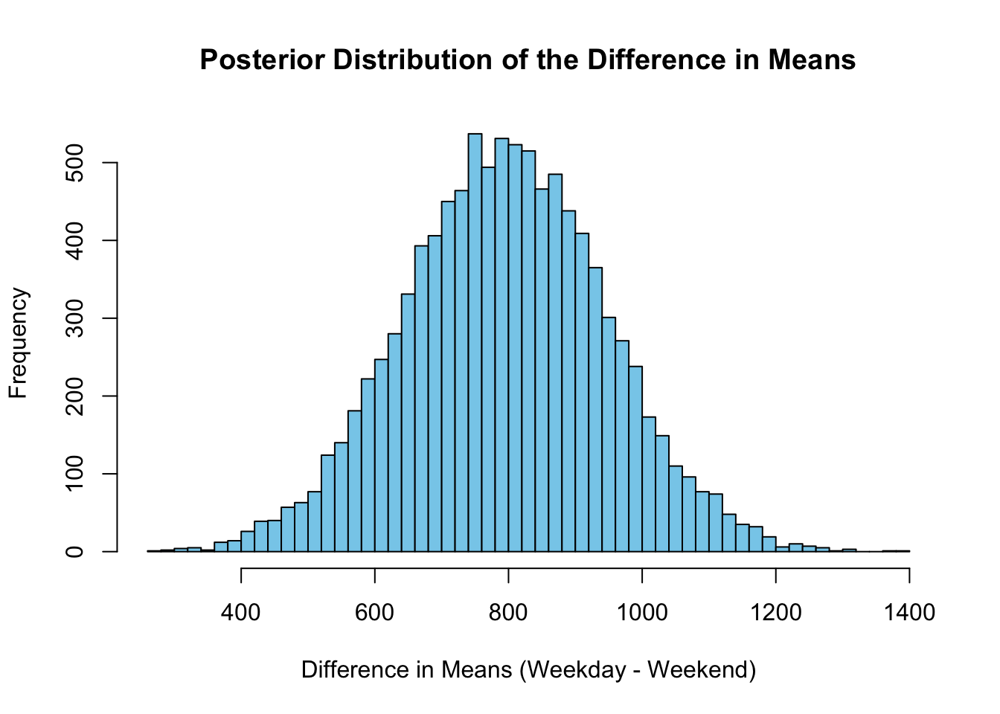
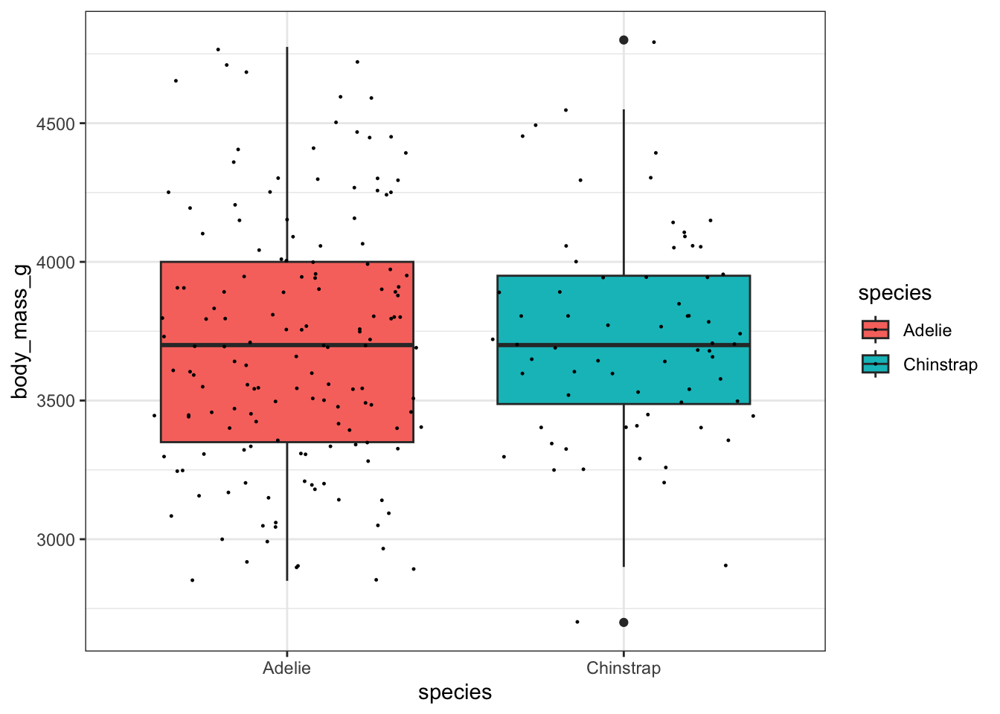

library(tidyverse)
library(bayesrules)
library(BayesFactor)
library(haven)
library(here)
library(Hmisc)
library(palmerpenguins)
options(scipen = 99)Lecture Bayes Factor
Libraries
Overview
Today, we are exploring Bayes Factors—a statistical tool that evaluates evidence for differences between two categorical groups. Unlike frequentist p-values, Bayes Factors (BF) quantify how much more likely the observed data are under one hypothesis versus another. Specifically, it tells us whether we should favor the null hypothesis (no difference) or the alternative hypothesis (there is a difference).
Bikes Data
data(bikes)How can we compare the number of rides between weekend days and non-weekend days?
- Find the mean number of rides for weekend days and non-weekend days
- Make a boxplot of number of rides showing the difference between weekend days and non-weekend days
- Make a density plot of number of rides showing the difference between weekend days and non-weekend days
Run a Bayesian T Test with the BayesFactor package
ttestBF(
formula = rides ~ weekend, # Numeric variable on left, categorical on right
data = bikes
)Bayes factor analysis
--------------
[1] Alt., r=0.707 : 82395.03 ±0%
Against denominator:
Null, mu1-mu2 = 0
---
Bayes factor type: BFindepSample, JZSBF10 = 82395.03 means the data are 82,395 times more likely under the alternative hypothesis (that there is a difference in the means between the two groups) than under the null hypothesis (that there is no difference).
Thresholds for interpreting Bayes Factors:
BF10 > 100: Extremely strong evidence for the alternative hypothesis (meaningful difference).
BF10 > 10: Strong evidence for the alternative hypothesis.
BF10 > 3: Moderate evidence for the alternative hypothesis.
BF10 ≈ 1: No evidence favoring one hypothesis over the other.
BF10 < 1/3: Moderate evidence for the null hypothesis.
BF10 < 1/10: Strong evidence for the null hypothesis.
Given that your BF10 = 82,395, the result provides overwhelming evidence that the number of rides differs between weekend and non-weekend days.
bf_result <- ttestBF(formula = rides ~ weekend, data = bikes)
# Draw posterior samples (10000 samples by default)
posterior_samples <- posterior(bf_result, iterations = 10000)
posterior_means <- posterior_samples[, "mu"] # Overall mean
posterior_difference <- posterior_samples[, "beta (FALSE - TRUE)"] # Difference in means
# Summary of the posterior difference
summary(posterior_difference)
Iterations = 1:10000
Thinning interval = 1
Number of chains = 1
Sample size per chain = 10000
1. Empirical mean and standard deviation for each variable,
plus standard error of the mean:
Mean SD Naive SE Time-series SE
794.472 151.564 1.516 1.883
2. Quantiles for each variable:
2.5% 25% 50% 75% 97.5%
496.6 692.0 794.6 896.5 1097.4 # Plot the posterior distribution of the difference
hist(posterior_difference, breaks = 50,
main = "Posterior Distribution of the Difference in Means",
xlab = "Difference in Means (Weekday - Weekend)", col = "skyblue")
# Calculate the 95% credible interval
credible_interval <- quantile(posterior_difference, probs = c(0.025, 0.975))
print(credible_interval) 2.5% 97.5%
496.5829 1097.3961 NHANES
diet_behavior <- read_xpt(here("data/nhanes_data/DR1TOT_J.XPT"))
blood_hg <- read_xpt(here("data/nhanes_data/2017-2018_Hg-Blood.XPT"))
urine_hg <- read_xpt(here("data/nhanes_data/2017-2018_Hg-Urine.XPT"))
diabetes <- read_xpt(here("data/nhanes_data/2017-2018_Diabetes.XPT"))
demographics <- read_xpt(here("data/nhanes_data/2017-2018_Demographics.XPT"))Subset Read-in Datasets
Subset ‘diet_behavior’ as ‘diet’
diet <- select(diet_behavior, SEQN, DRD360, DRD370B, DRD370BQ, DRD370Q, DRD370QQ)Subset ‘diabetes’ as ‘tiid’
tiid <- select(diabetes, SEQN, DIQ010, DIQ170)Subset ‘blood_hg’ as ‘bhg’
bhg <- select(blood_hg, SEQN, LBXIHG, LBDIHGSI, LBXBGE, LBXBGM)Subset “urine_hg’ as ‘uhg’
uhg <- select(urine_hg, SEQN, URXUHG)Merge Subsets Into A Working Dataframe as ‘df’
df <- list(diet, tiid, bhg, uhg)
df <- df %>% reduce(full_join, by = 'SEQN')- Filter Dataframe df for the following:
# Assuming your dataframe is named `nhanes_data`
df <- df %>%
# Filter out rows where DIQ010 or DRD360 are NA
filter(!is.na(DIQ010), !is.na(DRD370B)) %>%
# Keep only rows where DIQ010 and DRD360 are 1 or 2
filter(DIQ010 %in% c(1, 2), DRD370B %in% c(1, 2)) %>%
# Recode 1 to "Yes" and 2 to "No" for DIQ010 and DRD360
mutate(
DIQ010 = ifelse(DIQ010 == 1, "Has Diabetes", "No Diabetes"),
DRD370B = ifelse(DRD370B == 1, "Consumes Ahi", "No Ahi")
)df <- df %>%
filter(!is.na(LBXBGM))Explore the difference between methyl mercury levels, LBXBGM, in a population that consumes ahi vs a population that doesn’t consume ahi
Find the means of methyl mercurly levels for the two populations
Show difference with a boxplot
Show difference with a density plot
Run a t-test
We love penguins
data("penguins")penguins_sub <- subset(penguins, species %in% c("Chinstrap", "Adelie"))
penguins_sub$species <- droplevels(penguins_sub$species) # Drop unused levels
# Remove rows with missing values in body_mass_g
penguins_clean <- penguins_sub[!is.na(penguins_sub$body_mass_g), ]penguins_clean %>%
group_by(species) %>%
summarise(mean_body_mass = mean(body_mass_g))# A tibble: 2 × 2
species mean_body_mass
<fct> <dbl>
1 Adelie 3701.
2 Chinstrap 3733.ggplot(data = penguins_clean, aes(x = species, y = body_mass_g, fill = species)) +
geom_boxplot() +
geom_jitter(size = 0.2) +
theme_bw()
ttestBF(
formula = body_mass_g ~ species,
data = penguins_clean
)Warning: data coerced from tibble to data frameBayes factor analysis
--------------
[1] Alt., r=0.707 : 0.1787903 ±0.06%
Against denominator:
Null, mu1-mu2 = 0
---
Bayes factor type: BFindepSample, JZS